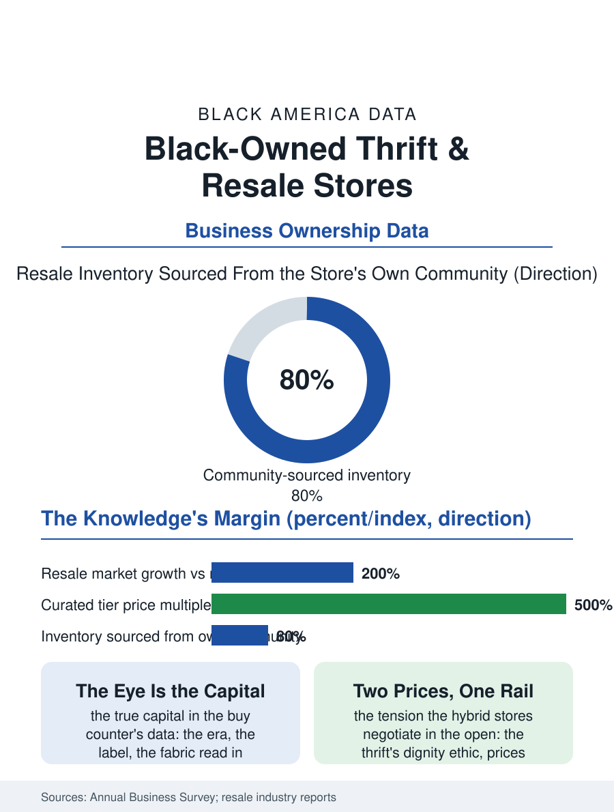

Black Business
The Closet in Common: Black-Owned Thrift and Resale Stores
The closet held in common, priced by the eye, from the charity rack's two dollars to the curated rack's forty. The resale file.

The thrift and resale store is the circular economy's storefront, and its Black-owned tier runs from the church rummage's permanent form to the curated vintage boutique whose racks the fashion file's young customers mine, a segment whose growth in the resale boom has outpaced the retail average for a decade. The business census folds the trade into the used merchandise categories. This article reads the resale file.
Supply Without a Supplier
The model's singularity is its inventory: the resale store buys from its own customers and its community's closets, its supply chain a donation bin and a buy counter, so that its cost of goods is the neighborhood's discard priced by the proprietor's eye, a skill whose value the curated era has repriced upward as the vintage market's knowledge, the era and the label and the fabric read at the counter in seconds, became the store's true capital. The church and charity tier is the segment's historic base in the Black community as elsewhere, the thrift as the ministry's revenue and the neighborhood's dignity-preserving exchange, the donated goods priced for the congregation's own, a model whose economics the commercial vintage tier has since stratified above, the same garment migrating from the charity rack's two dollars to the curated rack's forty on the knowledge's difference alone. The platform tier is the file's disruption and its ladder: the resale apps made every closet a store, and the Black seller's storefronts on them, counted in the platforms' seller data only in aggregate, constitute an invisible tier of the file whose leading sellers have converted the following into the physical boutique, the platform as the apprenticeship the buy counter once was. The estate cleanout is the store's supply frontier in the current data, the proprietor called to the family's house at the generation's turning to price the lifetime's accumulation in an afternoon, a service whose tact is the trade's professional ethic in its rawest form, and whose best practitioners are booked by the funeral homes' and the attorneys' referrals in the pattern of the other trust trades.
The Vintage Knowledge
The curated store's economics are the knowledge's: the buy price set by the eye, the sell price by the platform's comparables and the room's clientele, the margin being the spread the knowledge commands, with the fashion cycle's acceleration, the decades reviving in shortening sequence, making the inventory's timing a speculation the proprietor runs from the rack. The Black vintage store's distinctive stock is the culture's own material history, the concert tee and the fraternity's jacket, the church hat and the album-era denim, an archive the fashion industry mines for its references, so that the store functions, like the record store of the other file, as the culture's closet held in common, its proprietor an archivist with a register. The sustainability file gives the trade its current tailwind, the young consumer's resale preference being the industry's documented demographic fact, and the segment's chains and franchises have entered with the roll-up's capital in the pattern of the other service files.
The Closet Held in Common
The resale file closes on the store's social function in the neighborhood's economy, because the thrift is the one retail format whose prices are set for the poor by design rather than by the discount's accident, and its dignity, the good garment at the honest price in a room that treats the customer as a browser rather than a case, is the charity tier's founding ethic which the curated tier's success must not price out of the same neighborhood, a tension the hybrid stores, the ministry's racks and the vintage's in one room at two price points, negotiate in the open. The census counts the used merchandise stores in the thousands, their growth the retail data's bright line. The file's last entry is the rack's Saturday, the elder's church suit and the teenager's vintage tee departing in the same hour from the same rail, the closet's contents recirculating within the community that produced them, under the proprietor whose eye priced both, which is the circular economy in its original and most local form, older than its name. The rail turns, and the pricing turns with the season's eye.
More in Black Business
Black-Owned Businesses: Counts, Receipts, and the Representation Gap
About 161,000 Black-owned employer firms and three million solo ventures: how the Census Bureau counts Black business ownership, where firms concentrate, and the gap between population share and business share.
Black Median Net Worth: The Wealth Gap in Federal Reserve Data
The Federal Reserve puts Black median family net worth at $44,900, against $285,000 for White families — about 16 cents on the dollar. The widest gap in economic data.
Black Buying Power: The $1.8 Trillion Consumer Economy
Black buying power is estimated at about $1.8 trillion — larger than the economy of most nations. What the figure measures, who produces it, and what it buys.
Source: U.S. Census Bureau, Annual Business Survey for used merchandise stores; thredUp and resale industry annual reports.